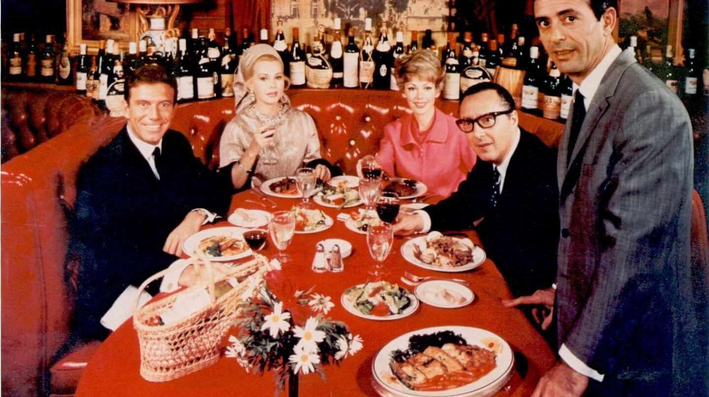
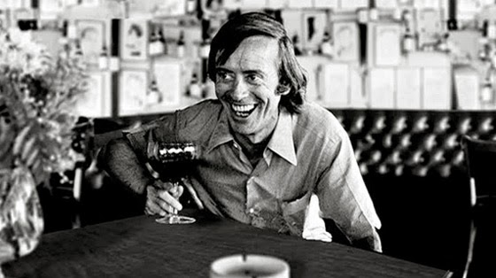
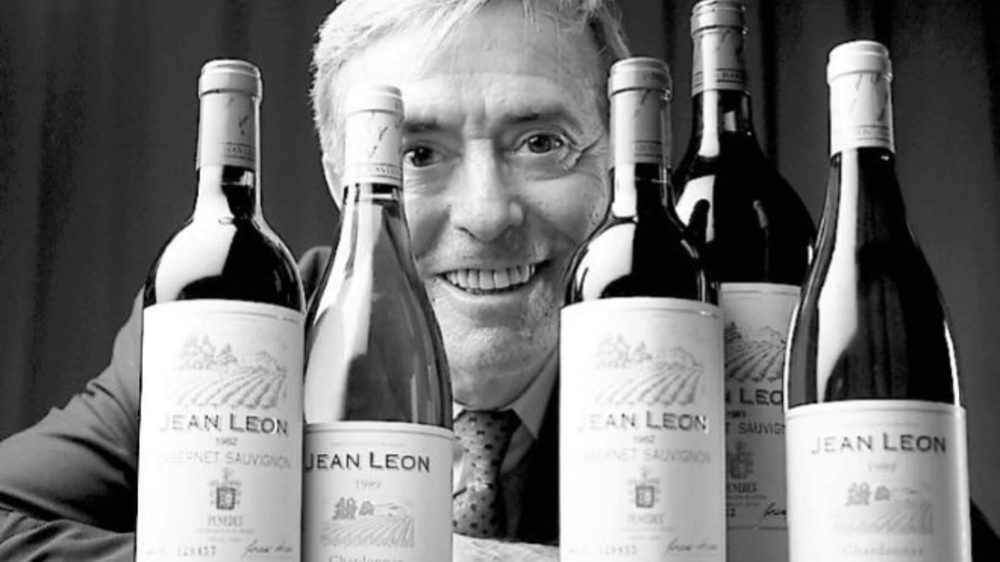
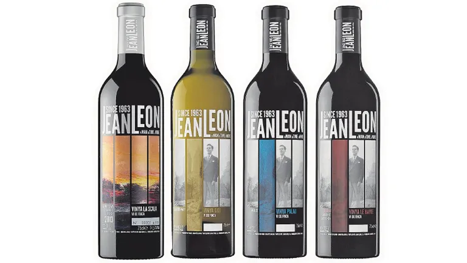
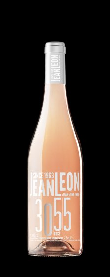

El vino que tiene más guion que muchas películas de Hollywood
Hay vinos que saben a uva, a tierra, a roble. Los Jean Leon saben a todo eso y, además, a una historia que ningún guionista se habría atrevido a inventar. D.O. Penedès, Torrelavit, familia Torres desde 1994. Todo muy correcto. Pero si le preguntas a la etiqueta quién fue el hombre que hay detrás, la etiqueta no te lo cuenta entero. Nosotros sí.
Una infancia con demasiada épica y poca suerte
Ángel Ceferino Carrión Madrazo nació en Santander el 28 de abril de 1928, tercero de nueve hermanos. Su padre era marino mercante y contratista. No sobraba nada, pero tampoco faltaba. Hasta que empezó a faltar todo.
Primero, el incendio de Santander de 1941 arrasó la ciudad entera una noche de febrero. La familia lo perdió todo y se trasladó a Barcelona. Luego, en julio del mismo año, el padre y el hermano mayor de Ceferino murieron torpedeados en alta mar: navegaban en un barco de la naviera de Nicolás Franco, sospechoso de transportar material de guerra para el Tercer Reich, y la armada británica lo hundió. Como España era oficialmente "neutral", no salió nada en la prensa. La viuda tardó tres años en cobrar la pensión.
Ceferino tenía doce años. Y ya había tomado una decisión que marcaría toda su vida: nunca serviría al general Franco, a quien consideraba el responsable de todo. Lo cumpliría con una consecuencia que no había calculado del todo.
Ceferino Carrión en Nueva York, principios de los años cincuenta. Acababa de llegar al país donde lo cambiaría todo.
Se fue a cenar. Y no volvió.
En 1947, Ceferino trabajaba como planchista en la fábrica Pegaso de Barcelona. El 16 de julio, día de la Virgen del Carmen, terminó su turno, se duchó, se arregló y le dijo a su madre que salía a cenar para celebrar el santo de su novia. Lo que hizo fue cruzar los Pirineos a pie con tres amigos rumbo a Francia.
En Francia trabajó de camarero, de intérprete y de lo que salía. Cuando España lo llamó a filas, no se presentó —fiel a su promesa de los doce años— y se convirtió oficialmente en prófugo. La familia sabía que se había marchado: les había escrito una carta diciéndoles que se iba a Guatemala con unos amigos. No llegó a Guatemala. Pero no por falta de intentos.
Le Havre, 1949Siete veces lo pillaron. A la octava, el barco era de América
Lo que vino después tiene un punto de comedia absurda que el propio Ceferino contaba con gracia. Intentó colarse en un barco rumbo a América siete veces. Siete. Y en las siete lo descubrieron y lo devolvieron a Francia —con la fortuna de que nunca lo mandaron de vuelta a España, donde lo esperaba un buen lío—. Sus tres amigos catalanes de aventura también fueron pillados y deportados a España.
A la octava, en el puerto de Le Havre, se coló en la bodega de un barco sin saber adónde iba. Solo sabía que era grande. Pensaba que quizás llegaba a Guatemala. Llegaba a Nueva York.
Durante la travesía, un marinero de raza negra lo encontró escondido en las bodegas. No lo delató. Le buscó comida y le enseñó inglés. Jean Leon lo buscó durante décadas para agradecérselo. Nunca lo encontró. Hasta el final de su vida decía que habría reconocido su cara entre un millón de personas.
«He recordado a este hombre toda mi vida. Habría reconocido su cara entre un millón de personas de su raza. Fue como un ángel protector para mí, sin el cual yo no habría podido entrar en América.»
Jean Leon · Jean Leon, el rey de Beverly Hills — Sebastián MorenoLe robaron los papeles. Se los arregló. Y su familia dejó de existir para él durante doce años
Al llegar a Nueva York encontró a un primo lejano de su padre con un pequeño bar que le dio trabajo fregando platos. La segunda noche en la ciudad se quedó dormido en un banco del parque. Le robaron toda la documentación. Con la soltura que ya caracterizaba su relación con la burocracia, se las arregló para nacionalizarse americano con el nombre de "Justo Ramón León". Nadie ha explicado del todo bien cómo.
Una semana después consiguió trabajo recogiendo platos en los comedores ejecutivos del Rockefeller Center. Allí sirvió a Henry Wallace, a Bing Crosby, a Harry Truman en plena campaña presidencial. Por las noches, para mejorar el inglés, conducía un taxi. Su número de licencia era el 3055 —el número que llevaría décadas después en una de sus líneas de vino más conocidas—.
Mientras tanto, su familia en Barcelona buscaba a Ceferino Carrión en el consulado americano. Sin resultado. Lógico: en los registros americanos ese nombre no existía. Existía "Justo Ramón León", que pronto se convertiría en Jean Leon —nombre tomado de un pintor francés del siglo XIX que admiraba—. La familia escribió durante años. Y durante doce años no obtuvo respuesta. Lo daban por muerto.
Entonces llegó Corea. El ejército americano lo llamó a filas. Se presentó, firmó, y cuando le llegó la orden de embarcar hacia el frente... desapareció a México. Volvió. Lo enviaron a Sacramento. Se volvió a escapar. Tuvo suerte: ese verano de 1951 la ONU propuso el alto al fuego. La guerra de Corea se acabó justo a tiempo para Ceferino, que ya se había escapado dos veces del ejército más poderoso del mundo.

La Scala, Beverly Hills. El restaurante que Jean Leon abrió en 1956 y se convirtió en el epicentro social de Hollywood.
Frank Sinatra le enseñó a moverse. James Dean le prometió dinero. Marilyn le pidió pasta
De vuelta en Hollywood, Jean Leon encontró trabajo en el Villa Capri, el restaurante de Frank Sinatra y Joe DiMaggio. Sinatra lo tomó bajo su ala y le enseñó a moverse en esos ambientes. Jean Leon conoció a Grace Kelly, Natalie Wood, Lauren Bacall, Marlon Brando. Todo en su trabajo.
El que más le marcó fue James Dean. Congeniaron enseguida —dos jóvenes inquietos con más sueños que dinero— y planearon juntos abrir el restaurante más prestigioso de Hollywood: Dean ponía el capital, Leon ponía la experiencia. Leon incluso le pidió que fuera el padrino de su hijo. Dean aceptó encantado.
El 30 de septiembre de 1955, James Dean murió en un accidente de coche en la autopista entre Los Ángeles y Salinas. Jean Leon quedó destrozado. Tardó meses. Pero al final decidió seguir adelante solo con el sueño de los dos.
El 1 de abril de 1956, La Scala abrió en Beverly Hills. Cocina mediterránea, bodega subterránea con 25.000 botellas, mesas circulares de cuero rojo. Pronto se convirtió en el lugar de moda: Kennedy, Zsa Zsa Gabor, Monroe, Brando. Jean Leon se convirtió en personaje de best-sellers de Jackie Collins y Judith Krantz. Hay quien dice que era más famoso que muchos de sus clientes.
Fue en esta época cuando Jean Leon encontró el teléfono de los Carrión en una guía telefónica durante un viaje a Europa. Llamó. Al otro lado del hilo, doce años después, su hermana no daba crédito. La familia que lo daba por muerto descubrió que era el dueño del restaurante más de moda de Hollywood.
🎬 La última cena de Marilyn Monroe
La noche del 4 de agosto de 1962, Marilyn Monroe llamó a Jean Leon para pedirle que le llevara pasta a domicilio a su casa de Brentwood. Los Fettuccini a la Marilyn, su plato favorito de la carta. Pocas horas después, la actriz murió. Jean Leon fue interrogado como testigo. Años después reconoció que aquella noche Marilyn no estaba sola.

Jean Leon en La Scala. Un hombre que sabía reírse de sí mismo y de todo lo que había tenido que superar para llegar hasta allí.
Insatisfecho con el vino que servía, compró un campo y cambió el mapa
Un hombre que había rediseñado su vida siete u ocho veces no iba a conformarse con servir vinos que no le convencían. Jean Leon visitó el Penedès, compró 150 hectáreas en Torrelavit y arrancó las cepas locales para plantar cabernet sauvignon, merlot y chardonnay —variedades entonces prácticamente desconocidas en toda España—. Los viticultores de la zona lo miraban como si estuviera loco.
Delegó la elaboración en un joven enólogo de 21 años llamado Jaume Rovira. En 1973 salieron al mercado las primeras botellas, cosecha de 1969. Era el primer Cabernet Sauvignon elaborado en España. En 1976 obtuvo la denominación de origen. Y en 1981, Ronald Reagan lo eligió para el banquete de su investidura en la Casa Blanca. Jean Leon era demócrata, pero Reagan le había prometido en broma que si ganaba, serviría su vino. Y lo cumplió.
Enfermo de cáncer de laringe, vendió la bodega a Miguel A. Torres con una única condición: que Jaume Rovira continuara al frente. Murió en Los Ángeles el 6 de octubre de 1996, navegando en su yate La Scala d'Amore, con un restaurante en Tailandia a medio planear porque hasta el final le quedaban cosas por hacer.

Jean Leon con sus vinos. El Cabernet Sauvignon 1983 fue elegido por la revista Wine entre los ocho mejores vinos del mundo.
Las viñas que llevan su nombre
Desde 1994, bajo la tutela de la familia Torres, la bodega Jean Leon mantiene las cuatro viñas que el propio Ceferino plantó: Vinya La Scala, Vinya Gigi, Vinya Le Havre y Vinya Palau —nombres que son, cada uno, un capítulo de su vida—. La gama 3055 recuerda su número de taxista. No es marketing: es memoria.

Las cuatro referencias de Vins de Finca Jean Leon, D.O. Penedès. Cada nombre, un lugar de la historia de Ceferino Carrión.
Todo eso cabe, si lo sabes, en cada copa
No hay etiqueta suficientemente grande para contener todo esto. Ceferino Carrión cruzó los Pirineos a pie, se coló en ocho barcos, fregó platos en el Rockefeller Center, conducía el taxi número 3055, sirvió la última cena a Marilyn Monroe, plantó el primer Cabernet Sauvignon de España y le votó al presidente que lo sirvió en la Casa Blanca.
Todo eso está en cada copa de Jean Leon, si sabes mirarlo.
Gourmets de Tarragona · Mayo 2026

Más sobre vino y territorio
El vino que no olvidó de dónde venía
Método ancestral y pét-nat: los elaboradores de la demarcación que hacen las burbujas más honestas de Cataluña.
Leer → Vinos
Vinos
El vino en la provincia de Tarragona
Ocho denominaciones, ocho territorios con voz propia. Historia, suelos y variedades del vino de Tarragona.
Leer →